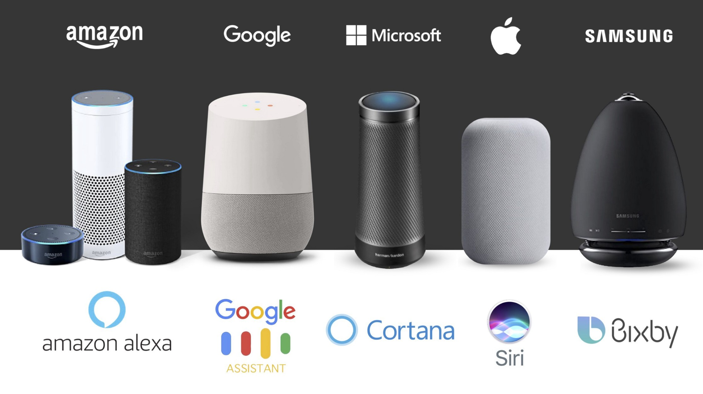
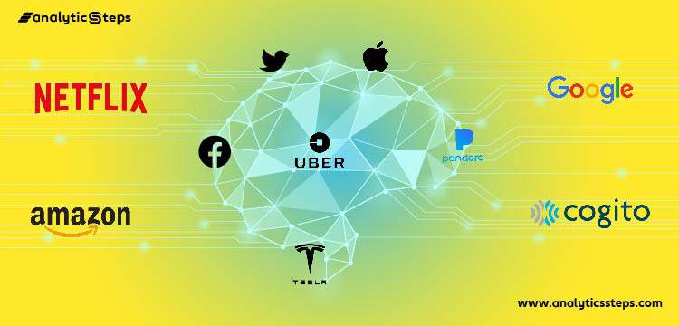

AI and Smart Assistants
If you’ve ever asked Siri to help find your AirPods or told Amazon Alexa to turn off the lights, then you’ve interacted with perhaps one of the most common forms of artificial intelligence permeating everyday life.

AI is the backbone of smart assistants, which can be accessed through most phones on the market
these days and are also being integrated into cars and smart home devices. As of 2022, more than
120 million U.S. adults use a smart assistant at least once a month.
Top AI Companies:
- Apple
- Microsoft
- Samsung Electronics
- SoundHound

AI in Healthcare
Artificial intelligence is proving to be a game-changer in healthcare, improving virtually every aspect of the industry from robot-assisted surgeries to safeguarding private records against cyber criminals.
Healthcare has long suffered from skyrocketing medical costs and inefficient processes. Artificial intelligence is giving the maligned industry a much-needed makeover.
AI-enabled virtual assistants are reducing unnecessary hospital visits and giving nurses
20 percent of their time back in the process; workflow assistants are helping doctors
free up 17 percent of their schedules; pharmaceutical companies are researching lifesaving
medicines in a fraction of the time and cost it traditionally takes; and AI is even being used
to help bring healthcare to underdeveloped nations.
AI Robotics
Industry leaders still can’t agree on what the term “robot” embodies. Roboticists understand robots to be programmable machines that carry out tasks, but nobody can pinpoint exactly where that definition ends.
Today’s AI-powered robots, or at least those machines deemed as such, possess no natural general intelligence, but they are capable of solving problems and “thinking” in a limited capacity.
AI Robot Companies:
- iRobot
- Hanson Robotics
- Softbank Robotics
- Miso Robotics
The Pros and Cons of Artificial Intelligence
Pros
-
Machine take decision based on previous data records. With algorithms, the chances of errors are reduced. This is an achievement, as solving complex problems require difficult calculation that can be done without any error.
-
Artificial Intelligence and the science of robotics is used in mining and other fuel exploration processes. These complex machines help to explore the ocean floor and overcome human limitations.
-
Siri listens to us and performs the task in one tap. GPS helps you to travel the world. How can I forget the basic necessity? Food, clothing, shelter, and smartphone. They are the ones that predict what we are going to type, in short, they know us better than anyone.
To ‘err’ is human, so why not use AI?
AI doesn’t get tired and wear out easily
Digital assistance helps in day to day chores

Cons
-
st, but there is no such thing as a free lunch too. It requires huge costs as it is a complex machine. Apart from the installation cost, its repair and maintenance also require huge costs.
The software programs need frequent upgradation and cater to the needs of the changing environment. -
No matter how smart a machine becomes, it can never replicate a human. Machines are rational but, very inhuman as they don’t possess emotions and moral values. They don’t know what is ethical and what’s legal and because of this, don’t have their own judgment making skills.
- Artificial intelligence cannot be improved with experience, they can perform the same function again if no different command is given to them. With time, it can lead to wear and tear. It stores a lot of data but the way it can be accessed and used is very different from human intelligence.
High cost
No human replication
No improvement with Experience
From AI HUB, WEST TECH and WEST DYNAMICS, THANK YOU FOR MAKING IT THIS FAR WITH US, WE APPRECIATE YOUR INTEREST AND HOPE THAT THE INFORMATION DISPLAYED ABOVE WAS HELPFUL.
-FROM THE WORLD AND BEYOND WE BID YOU FAREWELL FOR NOW!!